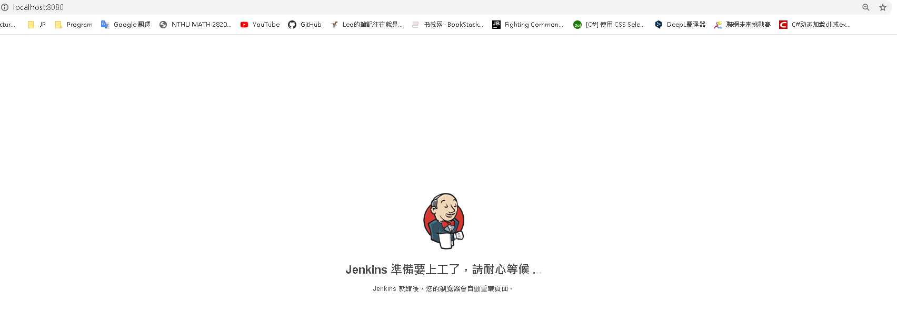
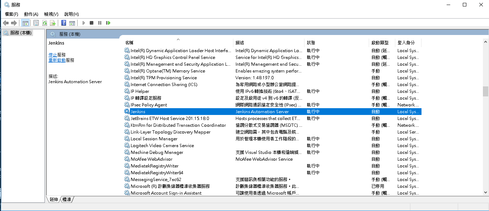
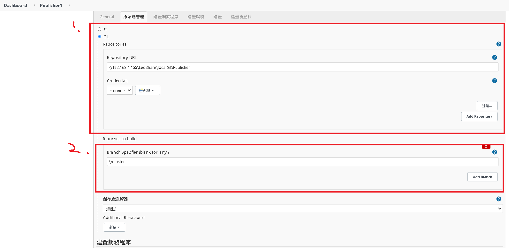
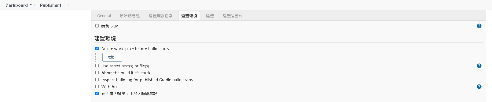
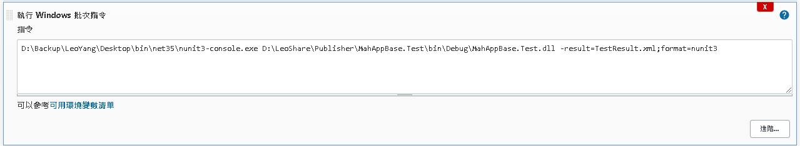
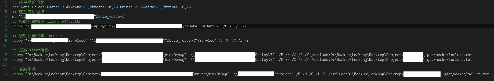

用Jenkins自動部屬WPF(FreeStyle軟體專案) 環境 安裝就不寫了，google jenkins然後下載下一步下一步就裝完了
安裝完之後在網址列輸入localhost:8080應該會看到jenkin的歡迎畫面，如果沒有看到的話

可以在windows command 輸入
檢查服務有沒有執行了，如果沒有執行的話按右鍵啟動Jenkins服務

登入之後會看到主畫面，如果已經有設定過的話會看到目前有的設定有哪些程式目前的狀態怎麼樣
新增作業 jenkin大部分時間在用的功能就是一直執行自己定義好的作業，像我是設定了編譯、執行測試、發布到指定位置
選主畫面的新增作業按紐，輸入這個作業的名稱之後，選建置Free-Style 軟體專案
之後可以照著jenkins的項目去設定自己要執行的動作
我的流程是:
1.git pull 最新的程式 
在設定這個功能之前要先去
2.刪除目前的工作區 
3.還原nuget套件 在建置中執行 '執行Windwows批次指令’
4.編譯專案 要執行這一個工作項目會需要裝一個jenkins的plugin
按左上角Jenkins logo回到主畫面後，選 管理jenkins > 管理外掛程式
應該是選可用的tab然後搜尋 MSBUID就會找到了，但因為我已經安裝完了，所以在可用的裡面找不到，而是在已安裝裡
安裝完plugin之後要去Global Tool Configuration 設定MSBuild路徑
都設定完之後再去設定新的作業中執行編譯專案的工作項目
5.執行源碼檢測 我們用的是SonarQube Community版本，在編譯專案的動作後面新增一個建置步驟 : 執行windows批次指令
把SonarQube的Scanner放到指定路徑後設定環境變數
1 2 3 SonarScanner.MSBuild.exe begin /k :"ProjectNameOnSonarQube" /d :sonar.host.url ="http://xx.xx.x.xx:9000" /d :sonar.login ="xxxxx818475a7953ce2d75c37edab09d383e9917" msbuild /t :Rebuild ProjectName.sln SonarScanner.MSBuild.exe end /d :sonar.login ="xxxxx818475a7953ce2d75c37edab09d383e9917"
6.執行測試 執行這一步因為我是在編譯完之後透過執行Windows batch的方式去執行測試所以不用裝什麼奇怪的plugin
但是要下載對應的單元測試執行程式，像我這裡是用NUnit3，所以要下載NUNIT3，透過圖片中的方式執行測試https://nunit.org/download/

7.輸出測試結果 要在jenkins上看到執行測試的結果要裝一個jekins NUnit的plugin，做法就像上面安裝MSBUID一樣，不過不用設定NUnit的路徑，主要目的是要在新增作業時有Publish NUnit test result report的項目可以選擇
8.部屬到指定位置 正常來說應該是要選圖片中的工作項目，讓jenkins執行完測試自動部屬檔案到指定位置，但是我的jenkins每次在設定這個動作需要的參數時一直crash，所以我是透過執行單元測試的方式，透過windows batch執行複製編譯完的檔案到指定目錄中

因為之前有透過githook部屬程式，所以備份目前版本、停用服務、部屬、通知使用者…我幾乎都用windows batch完成了
用Jenkins自動部屬WPF(PIPLINE) 直接上Script 1 2 3 4 5 6 7 8 9 10 11 12 13 14 15 16 17 18 19 20 21 22 23 24 25 26 27 28 29 30 31 32 33 34 35 36 37 38 39 40 41 42 43 44 45 46 47 48 49 50 51 52 53 54 55 56 57 58 59 60 61 62 63 64 65 66 67 68 69 70 71 72 73 74 75 76 77 78 79 80 81 82 83 node { stage('Clean up the workspace environment.' ) { bat """ dir rmdir /q /s ProjectName echo "done" """ } stage('Clone Project' ) { bat """ git clone http://ProjectName.git cd ProjectName git checkout uat """ } stage('Publish RDLC file' ) { bat """ xcopy "D:\\JenkinsWorkSpace\\workspace\\CompanyName.ProjectName immediately\\ProjectName\\WebApplication\\CompanyName.ProjectName.Report\\*.rdlc" "D:\\ProjectName.Report.RDLC" /H /C /I /Y /S """ } stage('Nuget restore' ) { bat """ cd ProjectName cd ConsoleApplication dir nuget restore CompanyName.ProjectName.R6DBSync.sln cd .. cd WebApplication dir nuget restore CompanyName.ProjectName.MVC.sln nuget restore CompanyName.ProjectName.Report.Web.sln cd .. """ } stage('Build Solution' ) { bat """ cd ProjectName cd ConsoleApplication dir msbuild CompanyName.ProjectName.R6DBSync.sln cd .. cd WebApplication dir msbuild CompanyName.ProjectName.MVC.sln msbuild CompanyName.ProjectName.Report.Web.sln cd .. """ } stage('Publish' ) { bat """ cd ProjectName cd ConsoleApplication msbuild CompanyName.ProjectName.R6DBSync.sln /p:outdir="D:\\PublishTemp\\_PublishedConsoles\\CompanyName.Console.ProjectName.R6DBSync pipeline" /p:Configuration=Release /p:Platform="Any CPU" xcopy "D:\\PublishTemp\\_PublishedConsoles\\CompanyName.Console.ProjectName.R6DBSync pipeline" "D:\\Console\\CompanyName.Console.ProjectName.R6DBSync\\bin\\Debug" /E /H /C /I /Y /exclude:D:\\CICDTools\\Exclude.txt del D:\\Console\\CompanyName.Console.ProjectName.R6DBSync\\bin\\Debug\\CompanyName.AA.dll cd .. cd WebApplication msbuild /t:Rebuild CompanyName.ProjectName.MVC.sln /p:outdir="D:\\PublishTemp" /p:Configuration=Release /p:Platform="Any CPU" xcopy "D:\\PublishTemp\\_PublishedWebsites\\CompanyName.ProjectName.MVC" "D:\\WebSites\\CompanyName.ProjectName.MVC" /E /H /C /I /Y /exclude:D:\\CICDTools\\Exclude.txt msbuild /t:Rebuild CompanyName.ProjectName.Report.Web.sln /p:outdir="D:\\WebSites\\CompanyName.ProjectName.Report.Web\\bin" /p:Configuration=Release /p:Platform="Any CPU" """ } stage('Restart Service' ) { bat """ C:\\Windows\\System32\\inetsrv\\appcmd.exe stop site "CompanyName.ProjectName.MVC" C:\\Windows\\System32\\inetsrv\\appcmd.exe start site "CompanyName.ProjectName.MVC" C:\\Windows\\System32\\inetsrv\\appcmd.exe stop site "CompanyName.ProjectName.Report.Web" C:\\Windows\\System32\\inetsrv\\appcmd.exe start site "CompanyName.ProjectName.Report.Web" """ } }